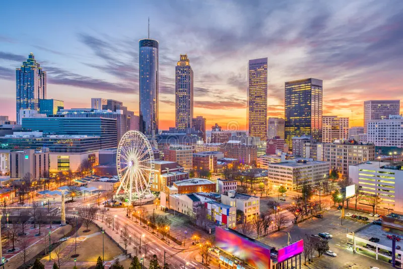
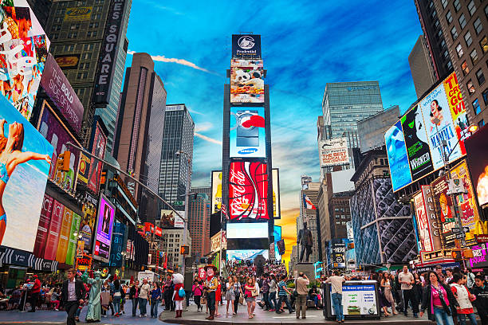
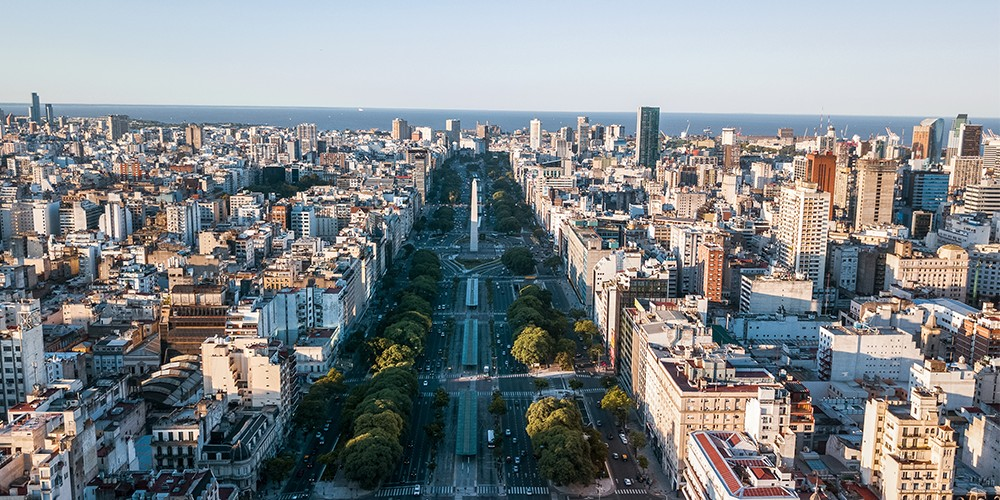
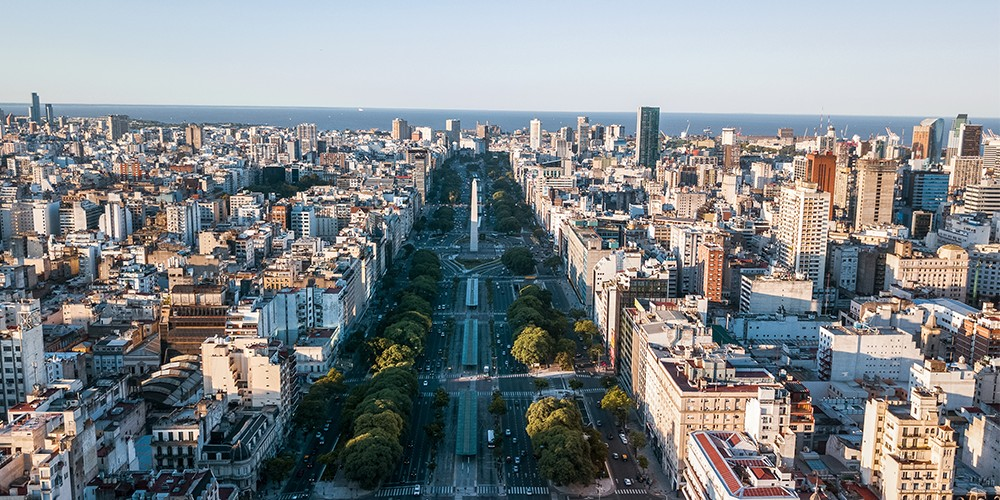
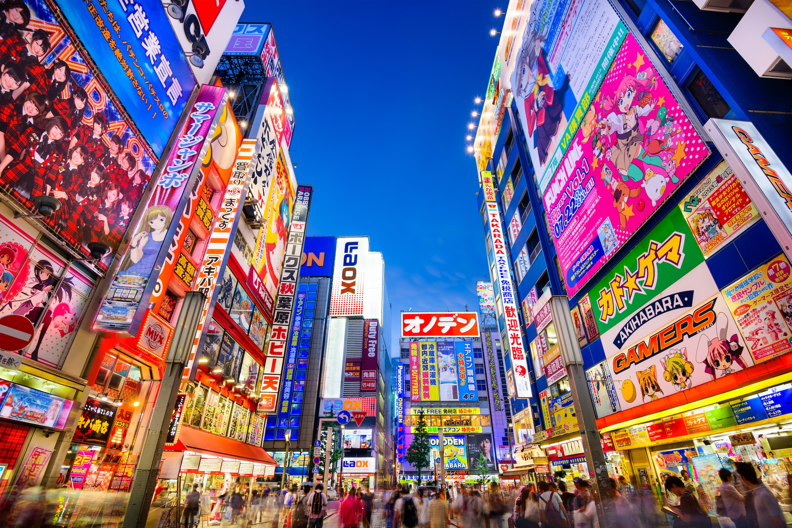

My passion for exploring the world stems from a deep fascination with the rich tapestry of human culture. I'm captivated by the diverse ways people live, the nuances of their languages, the rhythm of their walks, and the vibrant flavors of their cuisines. It's more than just sightseeing; it's about immersing myself in the everyday lives of others, understanding their perspectives, and witnessing the beautiful variations in human experience. Each journey is a lesson in empathy, broadening my understanding of the world and revealing the shared humanity that connects us all, no matter where we come from. The world is a living, breathing story, and I long to read every page.
Click the "continents" in the pic.

The United States is a nation built on the ideals of freedom and opportunity, and its impact on the world is undeniable. It's a land of vast diversity, from its breathtaking natural landscapes, like the Grand Canyon and Yellowstone, to its bustling, culturally rich cities like New York and Los Angeles. The US is a global leader in innovation and technology, driving advancements in fields like medicine, science, and communication. Its entertainment industry, from Hollywood to its music scene, has a profound influence worldwide. Furthermore, the nation's commitment to democratic principles and its role in international affairs have shaped global conversations about human rights and governance. While facing its own challenges, the US continues to be a powerful force in the world, offering opportunities and fostering a spirit of ambition that attracts people from all corners of the globe.
 
Argentina's urban landscape is a vibrant tapestry of European influence and Latin American passion. Buenos Aires, the capital, is a prime example, with its grand architecture reminiscent of Paris, its lively tango scene, and its bustling neighborhoods filled with cafes and cultural experiences. From the historic charm of San Telmo to the modern energy of Palermo, Argentine cities offer a unique blend of sophistication and warmth, reflecting the country's rich cultural heritage.
 


French cities, particularly Paris, are synonymous with elegance, art, and romance. Paris, the "City of Lights," boasts iconic landmarks like the Eiffel Tower, the Louvre Museum, and Notre Dame Cathedral, attracting millions of visitors each year. Beyond Paris, cities like Lyon and Nice offer their own distinct charms, with their historical architecture, world-renowned cuisine, and picturesque settings. French urban centers are hubs of culture, fashion, and history, providing a quintessential European experience.


Japan's cities represent a fascinating fusion of ancient traditions and cutting-edge technology. Tokyo, the capital, is a sprawling metropolis that seamlessly blends serene temples and gardens with towering skyscrapers and vibrant entertainment districts. Cities like Kyoto and Osaka offer a glimpse into Japan's rich history and cultural heritage, with their traditional architecture, serene gardens, and unique culinary traditions. Japanese cities are renowned for their cleanliness, efficiency, and innovative spirit, offering a unique and captivating urban experience.



Is pehle koi bole pakistan q nhi ha asia me to pakistan ke liye alag jaga ❤️ yahan.
Egyptian cities, especially Cairo, are living museums, showcasing the remnants of one of the world's oldest civilizations. Cairo, situated along the Nile River, is home to the Giza Pyramids, the Sphinx, and the Egyptian Museum, attracting historians and tourists alike. Cities like Luxor and Aswan further highlight Egypt's ancient past, with their magnificent temples and tombs. Egyptian cities are a captivating blend of ancient wonders and modern life, offering a glimpse into the country's rich history and cultural heritage.


New Zealand's cities are renowned for their stunning natural settings and relaxed, outdoor-oriented lifestyles. Auckland, the "City of Sails," boasts a beautiful harbor, lush parks, and a vibrant cultural scene. Wellington, the capital, is known for its arts and culture, its scenic waterfront, and its friendly atmosphere. New Zealand cities are modern, progressive, and environmentally conscious, offering a unique blend of urban amenities and natural beauty.


Bahi antartica me kya karonga me jakeüòÇ choro antartica jana cancel
lekin chalo nazare to lo zara antartica ke